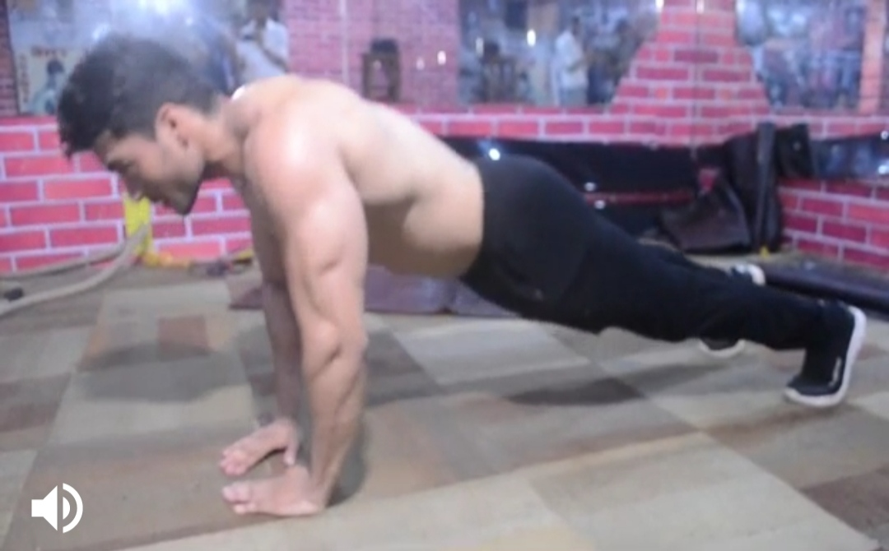
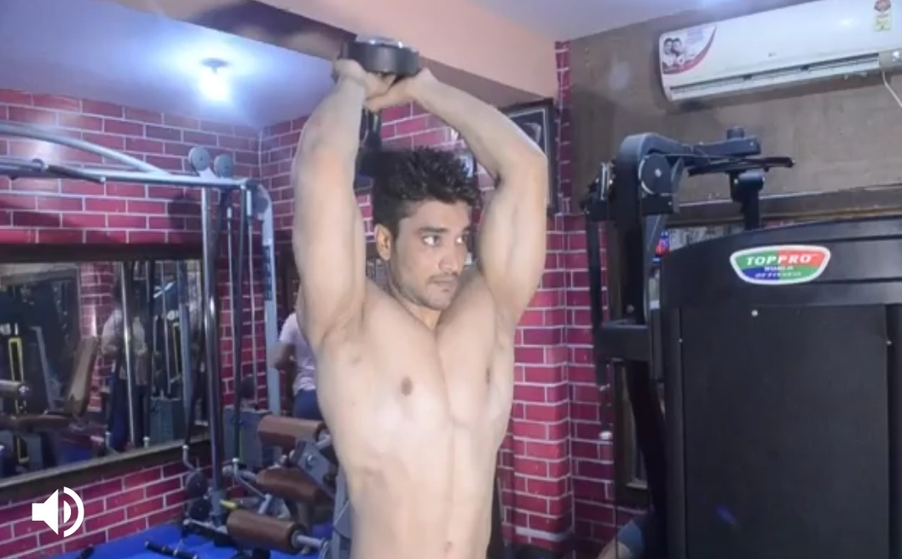
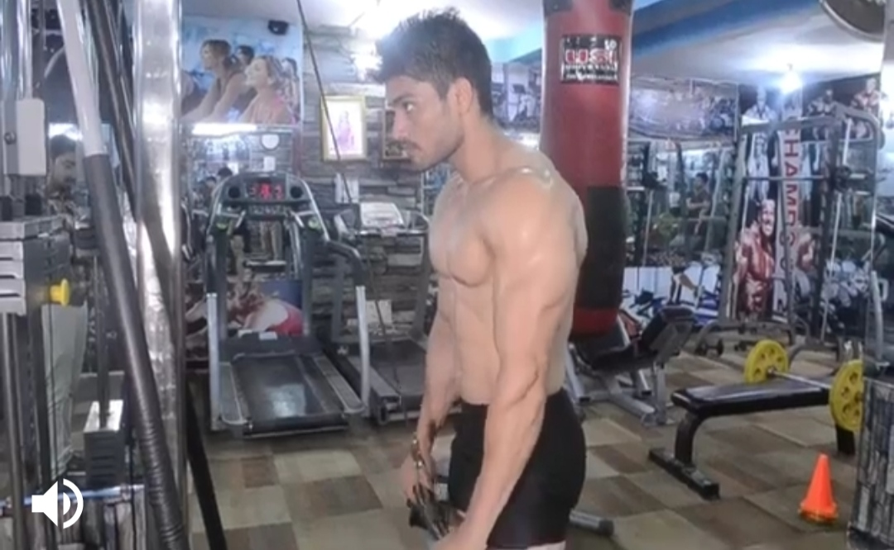
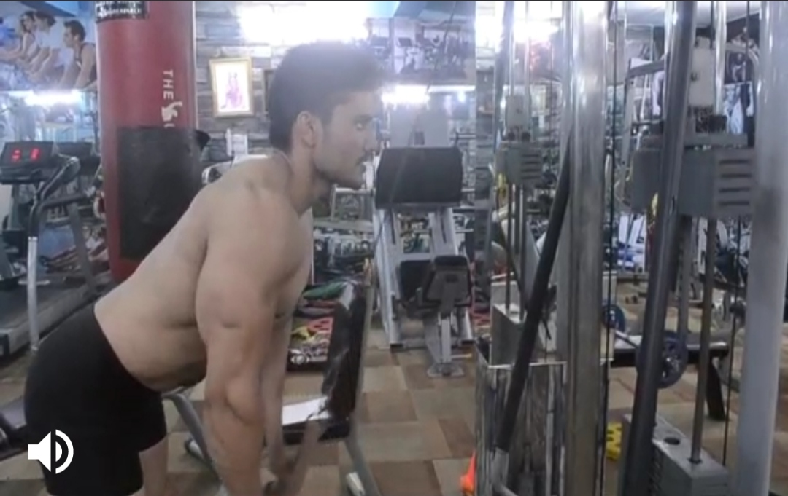
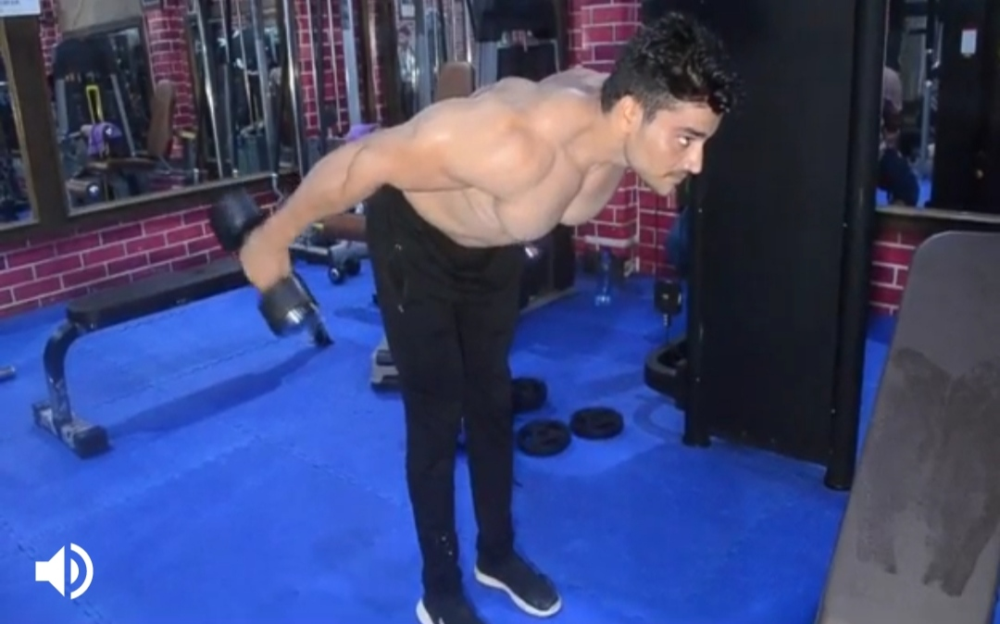

Dimond Push-up
Body Parts:Triceps
Description:
1) Get into the standard push-up position with your hands together directly beneath your chest so that index fingers and
thumbs are touching to form a triangle or diamond shape.
2) Keeping your core tight, slowly lower your body to the ground. Make sure to keep your elbows tucked in close by your sides
so they make a 45-degree angle with your torso. Without altering your hand placement, pause and push yourself back to the starting position.
-----------------------------------------------------------------------------------------------------------------------------------------------------------------


Standing Overhead Dumbell Extension
Body part:Triceps
Description
1) Handed grip a dumbbell in a neutral position with your arm extended and held vertically next to your head.
Keeping between your shoulder and elbow parallel with your body, flex your elbow until the dumbbell is behind your head.
Extend your arm again, moving the dumbbell back to its starting position. Can be done with both hands holding a single dumbbell same principle applies.
---------------------------------------------------------------------------------------------------------------------------------------------------------------------------------------


V-Bar Pushdown
Body part:Triceps
Description
Using a cable machine, raise the pulley above your head, use the V-Bar. Set your feet roughly shoulder width apart, tuck your elbows in, and lean slightly forward.
Now move your hands up and down in a complete range of motion and make sure to keep your hands in tight with your body.
-------------------------------------------------------------------------------------------------------------------------------------------------------------------------------


Hyperbench Rope Pushdown
Body parts:Triceps
Description
Take a few steps back from the machine and using an overhand grip, space your hands on the bar slightly less than shoulder-with apart.
You can also perform this movement with one foot in front of the other if it feels more comfortable. Lean forward and start with the bar touching your forehead.
With force, drive the weight down to your waist by extending your elbows. Make sure to keep your elbows close to your sides at all times.
Once you have locked your elbows out at the bottom, squeeze your triceps and then return the bar back to the starting position by touching your forehead.
-------------------------------------------------------------------------------------------------------------------------------------------------------------------------------------------


Dumbbell Row Kickback
Body part:Triceps
Description
1) Stand with feet hip-width apart, holding a dumbbell in each hand, arms by sides.
2) Hinge over slightly from waist, keeping back flat,until upper body is almost parallel to floor.
3) Keeping arms by sides, pull weights up toward chest, pressing elbows behind you.
4) Once hands are in line with ribs, press arms straight behind you.
5) Bend elbows by sides, lower arms and repeat.